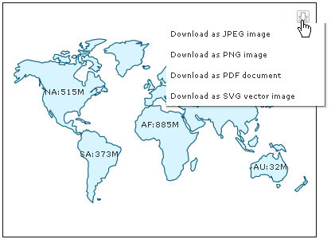

| Exporting Pure JavaScript Maps |
Pure JavaScript maps also provide support for exporting to JPEG, PNG, PDF, SVG formats. Let's see how we can implement this feature. |
| Enabling Export |
|
Similar to FusionMaps XT Flash-based maps, the JavaScript map's export feature can be enabled by specifying exportEnabled="1" of the <map> XML element or exportEnabled:"1" in JSON. The following sample data enables the exporting feature of FusionMaps XT(both Flash and JavaScript maps alike) using the default settings. <map borderColor='005879' fillColor='D7F4FF' numberSuffix=' Mill.' includeValueInLabels='0' labelSepChar=': ' baseFontSize='9' exportEnabled='1' exportAtClient='0' exportAction='download' exportHandler='http://www.domain.com/ExportHandlers/index.php' exportFileName='MyFileName'> {
"map": {
"bordercolor": "005879",
"fillcolor": "D7F4FF",
"numbersuffix": " Mill.",
"includevalueinlabels": "0",
"labelsepchar": ": ",
"basefontsize": "9",
"exportenabled": "1",
"exportatclient": "0",
"exportaction": "download",
"exporthandler": "http://www.domain.com/ExportHandlers/index.php",
"exportfilename": "MyFileName"
},
"colorrange": {
"color": [
{
"minvalue": "0",
"maxvalue": "500",
"displayvalue": "Sparsely Populated",
"color": "A7E9BC"
},
{
"minvalue": "500",
"maxvalue": "1000",
"displayvalue": "Well Populated",
"color": "FFFFCC"
},
{
"minvalue": "1000",
"maxvalue": "5000",
"displayvalue": "Densely Populated",
"color": "FF9377"
}
]
},
"data": [
{ "id": "NA" "value": "515" },
{ "id": "SA", "value": "373" },
{ "id": "AS" "value": "3875" },
{ "id": "EU", "value": "727" },
{ "id": "AF", "value": "885" },
{ "id": "AU", "value": "32" }
]
}
|
Once the exportEnabled attribute is set, a "Download" button will be displayed on the top right corner of your map. This button, when clicked, will provide you a list of various export file formats thereby enabling you to download an image or PDF version of the map. The following image shows how the list will appear when the above data is used in a World map.  See it live! During export of the pure JavaScript maps, the map data is sent to external servers for processing and converting to image. User must have an active internet connection for this feature to work. In case you want to process the exported data on your own server, you may setup the map to send the data to your own server. The details of how to do the same has been explained later on this page. There is a possibility that the exported image/PDF appears slightly visually different with respect to colors and effects from your original map that is being exported. FusionMaps XT Flash maps do not have a button to export the map. Instead, upon right-clicking the Flash maps, users can select exporting options using a context-menu. |
| Customizing the Export Feature |
|
The export features of the JavaScript maps presently have limited customizability when compared to the Flash maps. This is primarily owing to certain limitations of the present JavaScript export feature. You can hide the "Download" button on the map using the exportShowMenuItem="0". This will hide the export button. But, you will still be able to export the map using its JavaScript API similar to FusionMaps XT Flash maps . |
| Setup your own server to process and export JavaScript maps |
|
You may want to set up the export service of the JavaScript maps on your own server. For this, you require PHP and Java running in your server. A JavaScript map sends the export data to FusionCharts PHP Export Handler. It comprises of the following files (can be acquired from FusionCharts Download Pack > ExportHandlers > PHP folder) are required on your server:
Server configurations required:
If you want to save the exported file at your server, configure index.php to:
/* ----------------------- EXPORT PATH & URL -------------------------------- */ /**
* IMPORTANT: You need to change the location of folder where
* the exported map images/PDFs will be saved on your
* server. Please specify the path to a folder with
* write permissions in the constant SAVE_PATH below.
*/
define ( "SAVE_PATH", "./" );
/* Place your folder path here.*//**
* IMPORTANT: This constant HTTP_URL stores the HTTP reference to
* the folder where exported maps will be saved.
* Please enter the HTTP representation of that folder
* in this constant e.g., http://www.yourdomain.com/images/
*/
define ( "HTTP_URL", "http://www.yourdomain.com/images/" );
/* Define your HTTP Mapping URL here. *//**
* OVERWRITEFILE sets whether the export handler will overwrite an existing file
* the newly created exported file. If it is set to false the export handler will
* not overwrite. In this case if INTELLIGENTFILENAMING is set to true the handler
* will add a suffix to the new file name. The suffix is a randomly generated UUID.
* Additionally, you add a timestamp or random number as additional suffix.
*
*/
define ( "OVERWRITEFILE", false );
define ( "INTELLIGENTFILENAMING", true );
define ( "FILESUFFIXFORMAT", "TIMESTAMP" ) ;// can be TIMESTAMP or RANDOM/* Define file over-write, auto-naming and naming suffix configuration here.*/
|